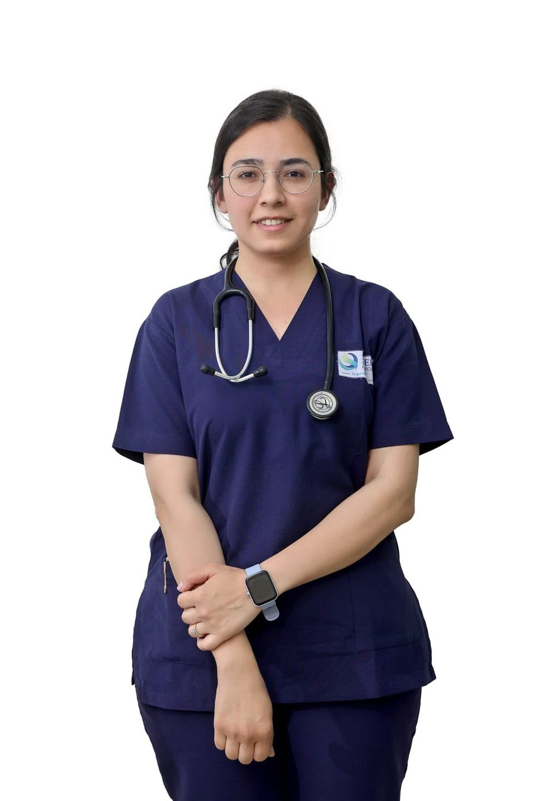
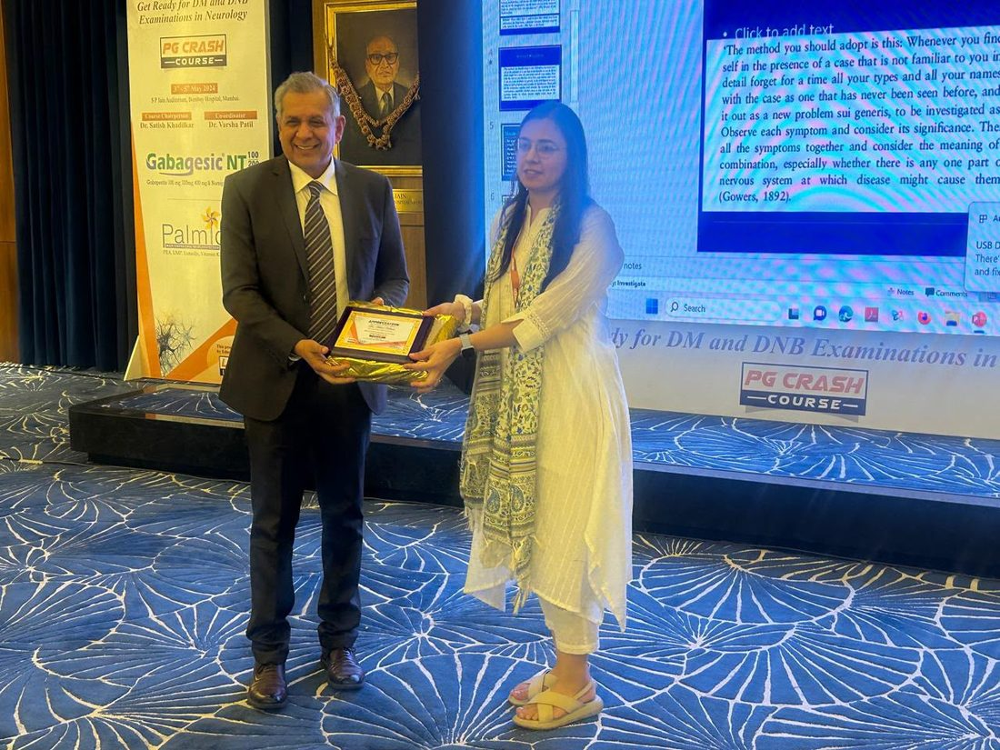
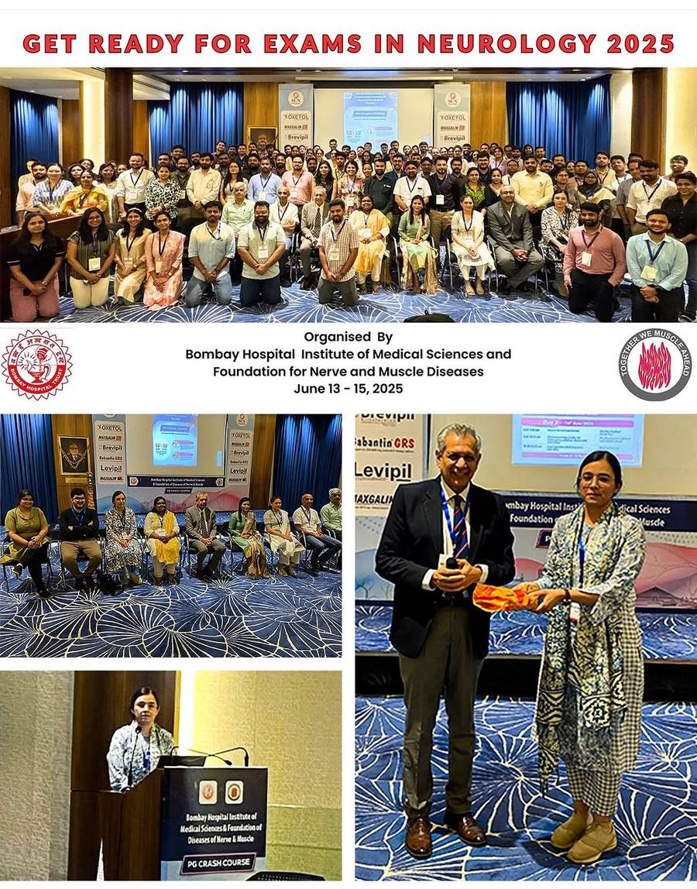

Profile
Dr. Hiral Halani Sheth
MD Medicine · DM Neurology · DrNB Neurology
Dr. Hiral is a consultant neurologist in Rajkot with a special interest in disorders of nerve and muscle.
She finished DM as gold medalist and stayed on for an additional year of speciality training.

Training
The path to the needle.
Neuromuscular medicine is one of the few neurology subspecialities where the specialist also operates the machine.
-
MBBS · MD
M. P. Shah Government Medical College, Jamnagar
MBBS and MD in Medicine, Saurashtra University.
-
Senior Residency
Guru Gobind Singh Hospital, Jamnagar
Senior residency in general medicine.
-
DM · DrNB
Bombay Hospital Institute of Medical Sciences, Mumbai
DM Neurology — gold medalist. DrNB Neurology.
-
Speciality Training · +1 year after DM
Neuromuscular Disorders — Bombay Hospital & Medical Research Centre
A dedicated additional year in nerve and muscle disease and clinical neurophysiology.
-
Consultant
Associate Consultant, Neurology — Bombay Hospital, Mumbai
Independent consultant practice and teaching before moving to Rajkot.
-
Present
Consultant Neurologist — Synergy Superspeciality Hospital, Rajkot
OPD, emergency and indoor neurology services.
Academics
Teaching the subject keeps the practice honest.
Gold medal & research prizes
First rank in the DM Neurology exit examination, 2022 — gold medalist.
Textbook chapters & papers
Author of textbook chapters and fourteen research publications.
National neuromuscular teaching
Faculty at national and international neuromuscular meetings.
Camps & awareness work
Neuropathy awareness programmes and epilepsy camps.
Out-patient neurology seminars
Teaching in the certificate course for physicians organised by API.
Movement disorders training
Observership and certificate course in movement disorders.
Research
Selected publications
Fourteen papers in peer-reviewed journals.
Also two textbook chapters.
- Reframing genetic myopathy classification: a unified, semiotic, tri-axis approach. Annals of Indian Academy of Neurology, 2025.
- Spectrum of anti-neurofascin neuropathies: a retrospective Indian cohort. Muscle & Nerve, 2026.
- Acquired hyperexcitable peripheral nerve disorders: clinical and laboratory features, therapeutic responses and long-term follow-up. Muscle & Nerve, 2024.
- Genetic appraisal of hereditary muscle disorders in a cohort from Mumbai, India. Journal of Neuromuscular Diseases, 2022.
- Treatable neuropathies. Journal of the Association of Physicians of India, 2025.
- Congenital myasthenic syndromes: a study of 15 cases. Neurology and Clinical Neuroscience.
- Clinical profile and outcome of non-COVID strokes during the pandemic and pre-pandemic period — COVID-Stroke Study Group (CSSG) India. Journal of the Neurological Sciences, 2021.
- Rapidly progressive ALS with atypical parkinsonism: an unusual case of multisystem proteinopathy from India.
- Review articles in The Bombay Hospital Journal, 2020–2022.
Gujarat Medical Council
Registered with the Gujarat Medical Council. Certificate no. G-37478.
Professional bodies
Member of the Indian Academy of Neurology and the International Movement Disorder Society.
Neurogenetics
Much of Dr. Hiral's published work has been on the genetics of inherited muscle disease in Indian families.
In practice


